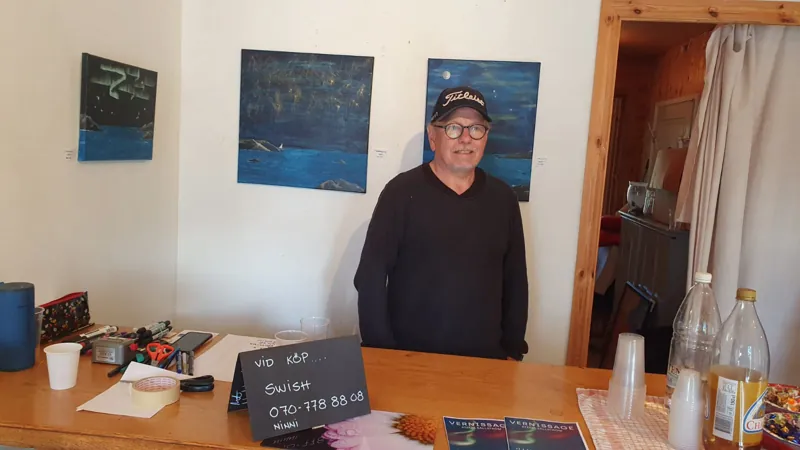
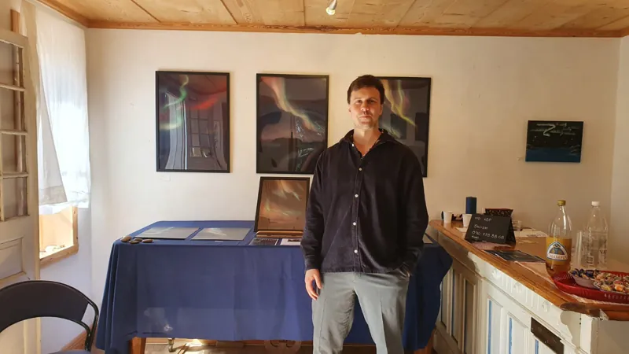
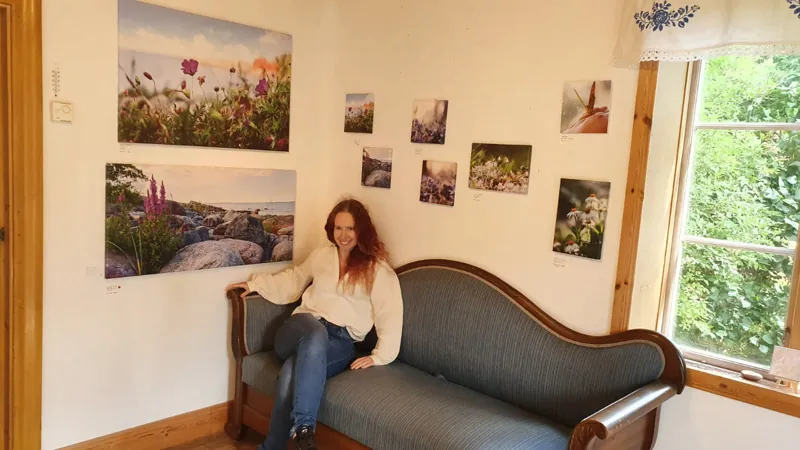

Om oss
Tre konstnärer, en familj — förenade av kreativitet och en gemensam dröm att skapa tillsammans.
Vår historia
Ateljé Sällström skapades för ett par år sedan när familjen enades om att göra något kreativt tillsammans efter många år av arbete för och tillsammans med andra aktörer. Det som började som en gemensam idé har vuxit till en levande konststudio där tre unika konstnärliga röster möts och inspirerar varandra.
Vårt mål och syfte är att bibehålla en gemenskap och ett umgänge, och därifrån utveckla, inspirera och skapa tillsammans. Varje verk som lämnar vår ateljé bär med sig en bit av vår gemensamma historia — och den individuella passionen hos var och en av oss.
Familjen är fyra. Vid sidan av de tre konstnärerna finns Barbro Edlund, som håller ihop och driver Ateljé Sällström. Hon står kanske inte själv vid staffliet, men ateljén är lika mycket hennes som vår.
Vi har ställt ut våra verk på flera platser, bland annat på Gregers Konstgalleri på Hornsgatan i Stockholm, Singö skola och Holmströms konstateljé, och vi ser ständigt fram emot nya möjligheter att dela vår konst med världen.
Konstnärerna
Lär känna de tre konstnärerna som utgör Ateljé Sällström.

Lennart Sällström
Pappan i Ateljé SällströmLennart är pappan i Ateljé Sällström och hjärtat bakom kollektivets konstnärliga arv. Han målar i akryl med starka, livfulla färger där rött ofta utgör basen i hans kompositioner. Hans verk genomsyras av en djup koppling till Stockholm och framför allt Södermalm, stadsdelen där han växte upp.
Med en bakgrund som lärare med bild och form som grund har Lennart en naturlig förmåga att förmedla känsla och berättelse genom sina målningar. Hans stadstavlor fångar Stockholms arkitektur och atmosfär med en energi och värme som speglar hans personliga relation till platsen.
Lennarts konst är en hyllning till det urbana landskapet — färgstarka silhuetter av byggnader, broar och gator som vibrerar av liv. Varje målning är en inbjudan att se staden genom hans ögon.

Robin Sällström
Sonen i Ateljé SällströmRobin är den digitala konstnären och filmskaparen i Ateljé Sällström. Utbildad inom design och media har han utvecklat en unik konstnärlig röst som lever i skärningspunkten mellan teknik och kreativitet. Hans verk utforskar gränslandet mellan det verkliga och det digitala.
Med hjälp av film, fotografier och olika sorters digitala verktyg skapar Robin unika och spännande konstverk som utmanar betraktarens perception. Hans kollektioner som ”Interstellar Dreams” visar på en förmåga att skapa visuella världar som är både drömska och tekniskt imponerande.
Robins arbete representerar den moderna dimensionen av Ateljé Sällström — en brygga mellan traditionell konst och samtida digitalt uttryck. Hans kreativa process involverar ofta experimenterande med nya verktyg och tekniker.

Ninni Sällström
Dottern i Ateljé SällströmNinni är dottern i Ateljé Sällström och en konstnär med en rik fantasi som tar sig uttryck i flera kreativa former. Hennes konstnärliga resa började med naturfotografier — poetiska stämningsfulla bilder som fångar naturens skönhet och detaljer med ett känsligt öga.
Under några år fokuserade Ninni på abstrakta målningar i akryl med den fascinerande pouring-tekniken. Genom att låta färgerna flöda fritt skapar hon organiska, nästan kosmiska kompositioner som påminner om naturens egna mönster — vattenvirvlar, molnformationer och geologiska strukturer.
Det senaste året har akvarellen blivit ett sätt att utforska färg, form och uttryck. Ett kreativt fritt och härligt sätt att få in kreativitet i vardagens livspussel.
Utöver bildkonst ägnar sig Ninni även åt kreativt skrivande, vilket ger hennes visuella verk en extra dimension av berättande. Hennes konst är en dialog mellan kontroll och slump, mellan det planerade och det spontana.
Utställningar
Där vi har visat våra verk — och vart vi är på väg härnäst.
”Mellan Stad och Dröm”Kommande
Galleri Hornsgatan 96, Stockholm. 9–13 oktober 2026. Vernissage lördag 10 oktober.
”Himmel & Hav”
Holmströms konst, Grisslehamn.
”På Söder”
Galleri Greger, Hornstull.
”På Singö”
Singö skola, Singö.
”Starten”
Oh La La, Kungsholmen.